Unsteady Flow Operations¶
Overview¶
This notebook demonstrates reading and manipulating unsteady flow files (.u## format). These define time-varying boundary conditions and simulation parameters.
What You'll Learn¶
- Parse unsteady flow file structure
- Extract boundary condition time series
- Modify initial condition lines
- Update simulation parameters
LLM Forward Approach¶
- Verification: Compare to HEC-RAS GUI
- Audit Trail: Save modified flow files
- Reproducibility: Document parameter changes
Reference Documentation¶
# =============================================================================
# DEVELOPMENT MODE TOGGLE
# =============================================================================
USE_LOCAL_SOURCE = True # <-- TOGGLE THIS
if USE_LOCAL_SOURCE:
import sys
from pathlib import Path
local_path = str(Path.cwd().parent)
if local_path not in sys.path:
sys.path.insert(0, local_path)
print(f"📁 LOCAL SOURCE MODE: Loading from {local_path}/ras_commander")
else:
print("📦 PIP PACKAGE MODE: Loading installed ras-commander")
# Import ras-commander
from ras_commander import HdfResultsXsec, RasCmdr, RasExamples, RasPlan, RasPrj, RasUnsteady, init_ras_project, ras
# Additional imports
import os
import numpy as np
import pandas as pd
from IPython.display import display
import matplotlib.pyplot as plt
# Verify which version loaded
import ras_commander
print(f"✓ Loaded: {ras_commander.__file__}")
# Set to True to generate plots, False to skip plotting
generate_plots = True
# Plot label helpers for technical figures
PLOT_LABELS = {
"Water_Surface": {"title": "Water Surface Elevation", "ylabel": "Water Surface Elevation (ft NAVD88)"},
"Velocity_Total": {"title": "Total Velocity", "ylabel": "Velocity (ft/s)"},
"Velocity_Channel": {"title": "Channel Velocity", "ylabel": "Velocity (ft/s)"},
"Flow_Lateral": {"title": "Lateral Flow", "ylabel": "Flow (cfs)"},
"Flow": {"title": "Cross-Section Flow", "ylabel": "Flow (cfs)"},
}
def annotate_peak(ax, x_values, y_values, label="Peak", offset=(18, -28), color="#b3261e"):
values = np.asarray(y_values, dtype=float)
if values.size == 0 or np.all(np.isnan(values)):
return
y_min = float(np.nanmin(values))
y_max = float(np.nanmax(values))
y_span = y_max - y_min
if y_span == 0 and abs(y_max) < 1e-9:
ax.text(
0.02,
0.90,
"No lateral flow (0 cfs)",
transform=ax.transAxes,
fontsize=9,
color="#444444",
bbox={"boxstyle": "round,pad=0.25", "fc": "white", "ec": "#bbbbbb", "alpha": 0.9},
)
ax.set_ylim(-0.05, 0.05)
return
peak_idx = int(np.nanargmax(values))
peak_y = float(values[peak_idx])
peak_x = x_values[peak_idx]
ax.scatter([peak_x], [peak_y], color=color, s=36, zorder=3)
ax.annotate(
f"{label}: {peak_y:,.1f}",
xy=(peak_x, peak_y),
xytext=offset,
textcoords="offset points",
arrowprops={"arrowstyle": "->", "color": "#444444", "lw": 1.0},
fontsize=9,
ha="left",
va="top",
annotation_clip=True,
)
📁 LOCAL SOURCE MODE: Loading from C:\GH\symphony-workspaces\ras-commander\CLB-888/ras_commander
2026-06-03 15:12:37 - numexpr.utils - INFO - NumExpr defaulting to 8 threads.
✓ Loaded: C:\GH\symphony-workspaces\ras-commander\CLB-888\ras_commander\__init__.py
Parameters¶
Configure these values to customize the notebook for your project.
# =============================================================================
# PARAMETERS - Edit these to customize the notebook
# =============================================================================
from pathlib import Path
# Project Configuration
PROJECT_NAME = "Muncie" # Example project to extract
RAS_VERSION = "7.0" # HEC-RAS version (6.3, 6.5, 6.6, etc.)
# Execution Settings
PLAN = "01" # Plan number to execute
NUM_CORES = 4 # CPU cores for 2D computation
RUN_SUFFIX = "run" # Suffix for run folder (e.g., Muncie_run)
import os
import sys
import logging
from contextlib import contextmanager
from pathlib import Path
import numpy as np
import pandas as pd
from IPython.display import display
import matplotlib.pyplot as plt
@contextmanager
def temporary_logger_level(logger_name, level):
"""Temporarily raise a logger threshold for notebook cells that intentionally initialize noisy example projects."""
target_logger = logging.getLogger(logger_name)
previous_level = target_logger.level
target_logger.setLevel(level)
try:
yield
finally:
target_logger.setLevel(previous_level)
# Set to True to generate plots, False to skip plotting
generate_plots = True
Understanding Unsteady Flow Files in HEC-RAS¶
Unsteady flow files (.u* files) in HEC-RAS define the time-varying boundary conditions that drive dynamic simulations. These include:
- Flow Hydrographs: Time-series of flow values at model boundaries
- Stage Hydrographs: Time-series of water surface elevations
- Lateral Inflows: Distributed inflows along a reach
- Gate Operations: Time-series of gate settings
- Meteorological Data: Rainfall, evaporation, and other meteorological inputs
The RasUnsteady class in RAS Commander provides methods for working with these files, including extracting boundaries, reading tables, and modifying parameters.
Let's set up our working directory and define paths to example projects:
Downloading and Extracting Example HEC-RAS Projects¶
We'll use the RasExamples class to download and extract an example HEC-RAS project with unsteady flow files. For this notebook, we'll use the project specified in the parameters (default: Muncie).
# Extract the example project
# The extract_project method downloads the project from GitHub if not already present,
# and extracts it to the example_projects folder
project_path = RasExamples.extract_project(PROJECT_NAME, suffix="300")
print(f"Extracted project to: {project_path}")
# Verify the path exists
print(f"Project exists: {project_path.exists()}")
2026-06-03 15:12:39 - ras_commander.RasExamples - INFO - Successfully extracted project 'Muncie' to C:\GH\symphony-workspaces\ras-commander\CLB-888\examples\example_projects\Muncie_300
Extracted project to: C:\GH\symphony-workspaces\ras-commander\CLB-888\examples\example_projects\Muncie_300
Project exists: True
Step 1: Project Initialization¶
The first step is to initialize the HEC-RAS project. This is done using the init_ras_project() function, which takes the following parameters:
ras_project_folder: Path to the HEC-RAS project folder (required)ras_version: HEC-RAS version (e.g., "6.6") or path to Ras.exe (required first time)
This function initializes the global ras object that we'll use for the rest of the notebook.
# Initialize the HEC-RAS project
# This function returns a RAS object, but also updates the global 'ras' object
# Parameters:
# - ras_project_folder: Path to the HEC-RAS project folder
# - ras_version: HEC-RAS version or path to Ras.exe
init_ras_project(project_path, RAS_VERSION)
print(f"Initialized HEC-RAS project: {ras.project_name}")
# Display the unsteady flow files in the project
2026-06-03 15:12:39 - ras_commander.RasUtils - INFO - Discovered HEC-RAS 7.0 at C:\Program Files (x86)\HEC\HEC-RAS\7.0\Ras.exe via filesystem (x86)
2026-06-03 15:12:39 - ras_commander.RasUtils - INFO - Discovered HEC-RAS 6.7 Beta 5 at C:\Program Files (x86)\HEC\HEC-RAS\6.7 Beta 5\Ras.exe via filesystem (x86)
2026-06-03 15:12:39 - ras_commander.RasUtils - INFO - Discovered HEC-RAS 6.7 Beta 4 at C:\Program Files (x86)\HEC\HEC-RAS\6.7 Beta 4\Ras.exe via filesystem (x86)
2026-06-03 15:12:39 - ras_commander.RasUtils - INFO - Discovered HEC-RAS 6.6 at C:\Program Files (x86)\HEC\HEC-RAS\6.6\Ras.exe via filesystem (x86)
2026-06-03 15:12:39 - ras_commander.RasUtils - INFO - Discovered HEC-RAS 6.5 at C:\Program Files (x86)\HEC\HEC-RAS\6.5\Ras.exe via filesystem (x86)
2026-06-03 15:12:39 - ras_commander.RasUtils - INFO - Discovered HEC-RAS 6.4.1 at C:\Program Files (x86)\HEC\HEC-RAS\6.4.1\Ras.exe via filesystem (x86)
2026-06-03 15:12:39 - ras_commander.RasUtils - INFO - Discovered HEC-RAS 6.3.1 at C:\Program Files (x86)\HEC\HEC-RAS\6.3.1\Ras.exe via filesystem (x86)
2026-06-03 15:12:39 - ras_commander.RasUtils - INFO - Discovered HEC-RAS 6.3 at C:\Program Files (x86)\HEC\HEC-RAS\6.3\Ras.exe via filesystem (x86)
2026-06-03 15:12:39 - ras_commander.RasUtils - INFO - Discovered HEC-RAS 6.2 at C:\Program Files (x86)\HEC\HEC-RAS\6.2\Ras.exe via filesystem (x86)
2026-06-03 15:12:39 - ras_commander.RasUtils - INFO - Discovered HEC-RAS 6.1 at C:\Program Files (x86)\HEC\HEC-RAS\6.1\Ras.exe via filesystem (x86)
2026-06-03 15:12:39 - ras_commander.RasUtils - INFO - Discovered HEC-RAS 6.0 at C:\Program Files (x86)\HEC\HEC-RAS\6.0\Ras.exe via filesystem (x86)
2026-06-03 15:12:39 - ras_commander.RasUtils - INFO - Discovered HEC-RAS 5.0.7 at C:\Program Files (x86)\HEC\HEC-RAS\5.0.7\Ras.exe via filesystem (x86)
2026-06-03 15:12:39 - ras_commander.RasUtils - INFO - Discovered HEC-RAS 5.0.6 at C:\Program Files (x86)\HEC\HEC-RAS\5.0.6\Ras.exe via filesystem (x86)
2026-06-03 15:12:39 - ras_commander.RasUtils - INFO - Discovered HEC-RAS 5.0.5 at C:\Program Files (x86)\HEC\HEC-RAS\5.0.5\Ras.exe via filesystem (x86)
2026-06-03 15:12:39 - ras_commander.RasUtils - INFO - Discovered HEC-RAS 5.0.4 at C:\Program Files (x86)\HEC\HEC-RAS\5.0.4\Ras.exe via filesystem (x86)
2026-06-03 15:12:39 - ras_commander.RasUtils - INFO - Discovered HEC-RAS 5.0.3 at C:\Program Files (x86)\HEC\HEC-RAS\5.0.3\Ras.exe via filesystem (x86)
2026-06-03 15:12:39 - ras_commander.RasUtils - INFO - Discovered HEC-RAS 5.0.1 at C:\Program Files (x86)\HEC\HEC-RAS\5.0.1\Ras.exe via filesystem (x86)
2026-06-03 15:12:39 - ras_commander.RasUtils - INFO - Discovered HEC-RAS 5.0 at C:\Program Files (x86)\HEC\HEC-RAS\5.0\Ras.exe via filesystem (x86)
2026-06-03 15:12:39 - ras_commander.RasUtils - INFO - Discovered HEC-RAS 4.1.0 at C:\Program Files (x86)\HEC\HEC-RAS\4.1.0\Ras.exe via filesystem (x86)
2026-06-03 15:12:39 - ras_commander.RasUtils - INFO - Discovered HEC-RAS 4.0 at C:\Program Files (x86)\HEC\HEC-RAS\4.0\Ras.exe via filesystem (x86)
2026-06-03 15:12:39 - ras_commander.RasUtils - INFO - Discovered 20 installed HEC-RAS version(s)
2026-06-03 15:12:39 - ras_commander.RasPrj - INFO - HEC-RAS 7.0 found via version discovery: C:\Program Files (x86)\HEC\HEC-RAS\7.0\Ras.exe
2026-06-03 15:12:39 - ras_commander.RasMap - INFO - Successfully parsed RASMapper file: C:\GH\symphony-workspaces\ras-commander\CLB-888\examples\example_projects\Muncie_300\Muncie.rasmap
2026-06-03 15:12:39 - ras_commander.RasPrj - INFO - ras-commander v0.98.0 | An open-source project of CLB Engineering Corporation (https://clbengineering.com/) | Docs: https://ras-commander.readthedocs.io | GitHub: https://github.com/gpt-cmdr/ras-commander
2026-06-03 15:12:39 - ras_commander.RasPrj - INFO - Project initialized: Muncie | Folder: C:\GH\symphony-workspaces\ras-commander\CLB-888\examples\example_projects\Muncie_300
2026-06-03 15:12:39 - ras_commander.RasPrj - INFO - Using HEC-RAS executable: C:\Program Files (x86)\HEC\HEC-RAS\7.0\Ras.exe
2026-06-03 15:12:39 - ras_commander.RasPrj - INFO -
═══════════════════════════════════════════════════════════════════════
ras-commander | HEC-RAS Automation Library
Docs: https://gpt-cmdr.github.io/ras-commander/
Repo: https://github.com/gpt-cmdr/ras-commander
═══════════════════════════════════════════════════════════════════════
PROJECT DATAFRAMES (single source of truth — use these, not file globbing):
ras.plan_df Plans, HDF paths, geometry/flow associations
ras.geom_df Geometry files and HDF preprocessor paths
ras.flow_df Steady flow files
ras.unsteady_df Unsteady flow files and configurations
ras.boundaries_df Boundary conditions (type, name, location)
ras.results_df Lightweight HDF results summaries
ras.rasmap_df RASMapper layers, terrain, land cover paths
KEY APIS (static classes — call directly, never instantiate):
Execution: RasCmdr.compute_plan() / compute_parallel() / compute_test_mode()
Plan Files: RasPlan.clone_plan() / clone_geom() / set_geom()
Unsteady: RasUnsteady — IC/BC management, gate openings, precipitation
Geometry: GeomCrossSection, GeomBridge, GeomStorage, GeomLateral, GeomMesh
HDF Results: HdfResultsPlan.get_wse() / get_compute_messages()
HdfResultsMesh.get_mesh_max_ws() / get_mesh_cells_timeseries()
HdfMesh.get_mesh_cell_points()
QA/QC: RasCheck.run_check() / RasFixit (geometry repair)
DSS: RasDss.get_timeseries() / check_pathname()
USGS: UsgsGaugeSpatial, GaugeMatcher, RasUsgsBoundaryGeneration
Precipitation: StormGenerator, Atlas14Storm, PrecipAorc, Atlas14Variance
Terrain: RasTerrain.create_terrain_hdf() / RasTerrainMod
MULTI-PROJECT: Pass ras_object= to all API calls when using local RasPrj instances.
EXAMPLES: 100+ notebooks in examples/ (100s=execution, 200s=geometry, 300s=unsteady,
400s=HDF results, 500s=remote, 800s=QA/QC, 900s=data integration).
Review relevant notebooks before assembling new workflows.
PLATFORM: Most HEC-RAS operations require Windows. Linux/Wine support for
headless execution, data access, geometry modification, and preprocessing
is available via RasProcess (HEC-RAS 6.6+). See ras_commander/RasProcess.py.
Remote distributed execution: ras_commander/remote/ (PsExec, Docker, SSH, cloud).
═══════════════════════════════════════════════════════════════════════
Initialized HEC-RAS project: Muncie
HEC-RAS Project Plan Data (plan_df):
| plan_number | unsteady_number | geometry_number | Plan Title | Program Version | Short Identifier | Simulation Date | Computation Interval | Mapping Interval | Run HTab | ... | Friction Slope Method | UNET D2 SolverType | UNET D2 Name | HDF_Results_Path | Geom File | Geom Path | Flow File | Flow Path | full_path | flow_type | |
|---|---|---|---|---|---|---|---|---|---|---|---|---|---|---|---|---|---|---|---|---|---|
| 0 | 01 | 01 | 01 | Unsteady Multi 9-SA run | 5.00 | 9-SAs | 02JAN1900,0000,02JAN1900,2400 | 15SEC | 5MIN | 1 | ... | 1 | NaN | NaN | None | 01 | C:\GH\symphony-workspaces\ras-commander\CLB-88... | 01 | C:\GH\symphony-workspaces\ras-commander\CLB-88... | C:\GH\symphony-workspaces\ras-commander\CLB-88... | Unsteady |
| 1 | 03 | 01 | 02 | Unsteady Run with 2D 50ft Grid | 5.10 | 2D 50ft Grid | 02JAN1900,0000,02JAN1900,2400 | 10SEC | 5MIN | -1 | ... | 1 | Pardiso (Direct) | 2D Interior Area | None | 02 | C:\GH\symphony-workspaces\ras-commander\CLB-88... | 01 | C:\GH\symphony-workspaces\ras-commander\CLB-88... | C:\GH\symphony-workspaces\ras-commander\CLB-88... | Unsteady |
| 2 | 04 | 01 | 04 | Unsteady Run with 2D 50ft User n Value R | 5.10 | 50ft User n Regions | 02JAN1900,0000,02JAN1900,2400 | 10SEC | 5MIN | 1 | ... | 1 | Pardiso (Direct) | 2D Interior Area | None | 04 | C:\GH\symphony-workspaces\ras-commander\CLB-88... | 01 | C:\GH\symphony-workspaces\ras-commander\CLB-88... | C:\GH\symphony-workspaces\ras-commander\CLB-88... | Unsteady |
3 rows × 35 columns
HEC-RAS Project Geometry Data (geom_df):
| geom_file | geom_number | full_path | hdf_path | has_1d_xs | has_2d_mesh | num_cross_sections | num_inline_structures | num_bridges | num_culverts | num_weirs | num_gates | num_lateral_structures | num_sa_2d_connections | mesh_cell_count | mesh_area_names | geom_title | description | |
|---|---|---|---|---|---|---|---|---|---|---|---|---|---|---|---|---|---|---|
| 0 | g01 | 01 | C:\GH\symphony-workspaces\ras-commander\CLB-88... | C:\GH\symphony-workspaces\ras-commander\CLB-88... | True | False | 61 | 0 | 0 | 0 | 0 | 0 | 0 | 10 | 0 | [] | Muncie Base Geometry - 9 SAs | None |
| 1 | g02 | 02 | C:\GH\symphony-workspaces\ras-commander\CLB-88... | C:\GH\symphony-workspaces\ras-commander\CLB-88... | True | True | 61 | 0 | 0 | 0 | 0 | 0 | 0 | 0 | 5391 | [2D Interior Area] | Muncie Geometry - 2D 50ft Grid | None |
| 2 | g04 | 04 | C:\GH\symphony-workspaces\ras-commander\CLB-88... | C:\GH\symphony-workspaces\ras-commander\CLB-88... | True | True | 61 | 0 | 0 | 0 | 0 | 0 | 0 | 0 | 5391 | [2D Interior Area] | Muncie Geometry - 50ft User n Value Regi | None |
HEC-RAS Project Unsteady Flow Data (unsteady_df):
| unsteady_number | full_path | Flow Title | Program Version | Use Restart | Restart Filename | Precipitation Mode | Wind Mode | Met BC=Precipitation|Expanded View | Met BC=Precipitation|Gridded Source | description | |
|---|---|---|---|---|---|---|---|---|---|---|---|
| 0 | 01 | C:\GH\symphony-workspaces\ras-commander\CLB-88... | Flow Boundary Conditions | 6.30 | 0 | Muncie.p05.02JAN1900 1200.rst | Disable | No Wind Forces | 0 | DSS |
print("\nHEC-RAS Project Boundary Data (boundaries_df):")
print("Columns:", list(ras.boundaries_df.columns))
ras.boundaries_df
HEC-RAS Project Boundary Data (boundaries_df):
Columns: ['unsteady_number', 'boundary_condition_number', 'river_reach_name', 'river_station', 'storage_area_name', 'pump_station_name', 'area_2d', 'bc_line_name', 'bc_type', 'hydrograph_type', 'Interval', 'Stage Hydrograph TW Check', 'DSS Path', 'Use DSS', 'Use Fixed Start Time', 'Fixed Start Date/Time', 'Is Critical Boundary', 'Critical Boundary Flow', 'hydrograph_num_values', 'hydrograph_values', 'Friction Slope', 'friction_slope_value', 'critical_fallback_flag', 'full_path', 'Flow Title', 'Program Version', 'Use Restart', 'Restart Filename', 'Precipitation Mode', 'Wind Mode', 'Met BC=Precipitation|Expanded View', 'Met BC=Precipitation|Gridded Source', 'description']
| unsteady_number | boundary_condition_number | river_reach_name | river_station | storage_area_name | pump_station_name | area_2d | bc_line_name | bc_type | hydrograph_type | ... | full_path | Flow Title | Program Version | Use Restart | Restart Filename | Precipitation Mode | Wind Mode | Met BC=Precipitation|Expanded View | Met BC=Precipitation|Gridded Source | description | |
|---|---|---|---|---|---|---|---|---|---|---|---|---|---|---|---|---|---|---|---|---|---|
| 0 | 01 | 1 | White | Muncie | 15696.24 | Flow Hydrograph | Flow Hydrograph | ... | C:\GH\symphony-workspaces\ras-commander\CLB-88... | Flow Boundary Conditions | 6.30 | 0 | Muncie.p05.02JAN1900 1200.rst | Disable | No Wind Forces | 0 | DSS | ||||
| 1 | 01 | 2 | White | Muncie | 237.6455 | Normal Depth | NaN | ... | C:\GH\symphony-workspaces\ras-commander\CLB-88... | Flow Boundary Conditions | 6.30 | 0 | Muncie.p05.02JAN1900 1200.rst | Disable | No Wind Forces | 0 | DSS |
2 rows × 33 columns
Inspecting Boundary Conditions¶
The boundaries_df DataFrame contains enhanced columns for boundary condition analysis:
New Columns (v0.88+):
- Flow Hydrograph QMult - Flow multiplier value
- Flow Hydrograph QMin - Minimum flow threshold
- dss_part_a through dss_part_f - Parsed DSS path components
# Inspect boundary conditions with enhanced columns
print("Boundary Condition Summary:")
print("=" * 80)
print(f"Total boundaries: {len(ras.boundaries_df)}")
# Check for DSS-linked boundaries
dss_count = (ras.boundaries_df['Use DSS'] == 'True').sum()
print(f"DSS-linked boundaries: {dss_count}")
# Show QMult values if any exist
if 'Flow Hydrograph QMult' in ras.boundaries_df.columns:
has_qmult = ras.boundaries_df['Flow Hydrograph QMult'].notna().sum()
print(f"Boundaries with flow multipliers: {has_qmult}")
# Show DSS path component availability
if 'dss_part_a' in ras.boundaries_df.columns:
has_dss_parts = ras.boundaries_df['dss_part_a'].notna().sum()
print(f"Boundaries with parsed DSS paths: {has_dss_parts}")
if has_dss_parts > 0:
unique_basins = ras.boundaries_df['dss_part_a'].dropna().nunique()
print(f"Unique HMS subbasins (A-part): {unique_basins}")
# Display key columns
print("\nBoundary Details:")
display_cols = ['bc_type', 'river_station', 'Use DSS', 'dss_part_a', 'Flow Hydrograph QMult']
available_cols = [c for c in display_cols if c in ras.boundaries_df.columns]
display(ras.boundaries_df[available_cols].head(10))
Boundary Condition Summary:
================================================================================
Total boundaries: 2
DSS-linked boundaries: 0
Boundary Details:
| bc_type | river_station | Use DSS | |
|---|---|---|---|
| 0 | Flow Hydrograph | Muncie | False |
| 1 | Normal Depth | Muncie | NaN |
Understanding the RasUnsteady Class¶
The RasUnsteady class provides functionality for working with HEC-RAS unsteady flow files (.u* files). Key operations include:
- Extracting Boundary Conditions: Read and parse boundary conditions from unsteady flow files
- Modifying Flow Titles: Update descriptive titles for unsteady flow scenarios
- Managing Restart Settings: Configure restart file options for continuing simulations
- Working with Tables: Extract, modify, and update flow tables
Most methods in this class are static and work with the global ras object by default, though you can also pass in a custom RAS object.
Step 2: Extract Boundary Conditions and Tables¶
The extract_boundary_and_tables() method from the RasUnsteady class allows us to extract boundary conditions and their associated tables from an unsteady flow file.
Parameters for RasUnsteady.extract_boundary_and_tables():
- unsteady_file (str): Path to the unsteady flow file
- ras_object (optional): Custom RAS object to use instead of the global one
Returns:
- pd.DataFrame: DataFrame containing boundary conditions and their associated tables
Let's see how this works with our example project:
# Get the path to unsteady flow file "01"
unsteady_file = RasPlan.get_unsteady_path("01")
print(f"Unsteady flow file path: {unsteady_file}")
# Extract boundary conditions and tables
boundaries_df = RasUnsteady.extract_boundary_and_tables(unsteady_file)
print(f"Extracted {len(boundaries_df)} boundary conditions from the unsteady flow file.")
2026-06-03 15:12:39 - ras_commander.RasUnsteady - INFO - Successfully extracted boundaries and tables from C:\GH\symphony-workspaces\ras-commander\CLB-888\examples\example_projects\Muncie_300\Muncie.u01
Unsteady flow file path: C:\GH\symphony-workspaces\ras-commander\CLB-888\examples\example_projects\Muncie_300\Muncie.u01
Extracted 2 boundary conditions from the unsteady flow file.
Step 3: Print Boundaries and Tables¶
The print_boundaries_and_tables() method provides a formatted display of the boundary conditions and their associated tables. This method doesn't return anything; it just prints the information in a readable format.
Parameters for RasUnsteady.print_boundaries_and_tables():
- boundaries_df (pd.DataFrame): DataFrame containing boundary conditions from extract_boundary_and_tables()
Let's use this method to get a better understanding of our boundary conditions:
# Print the boundaries and tables in a formatted way
print("Detailed boundary conditions and tables:")
RasUnsteady.print_boundaries_and_tables(boundaries_df)
Detailed boundary conditions and tables:
Boundaries and Tablesin boundaries_df:
Boundary 1:
River Name: White
Reach Name: Muncie
River Station: 15696.24
DSS File:
Tables for this boundary:
Flow Hydrograph:
Value
0 1.350000e+04
1 1.400000e+04
2 1.450000e+04
3 1.500000e+04
4 1.550000e+04
5 1.600000e+04
6 1.650000e+04
7 1.700000e+04
8 1.750000e+04
9 1.800000e+04
10 1.850000e+04
11 1.900000e+04
12 1.950000e+04
13 2.000000e+04
14 2.050000e+04
15 2.100000e+04
16 2.100000e+04
17 2.100000e+04
18 2.100000e+04
19 2.100000e+04
20 2.100000e+04
21 2.050000e+04
22 2.000000e+04
23 1.950000e+04
24 1.900000e+04
25 1.850000e+04
26 1.800000e+04
27 1.750000e+04
28 1.700000e+04
29 1.650000e+04
30 1.600000e+04
31 1.550000e+04
32 1.500014e+07
33 8.333141e+01
34 6.667000e+01
35 1.375013e+07
36 3.333129e+01
37 1.667000e+01
38 1.250012e+07
39 8.333000e+01
40 1.166667e+04
41 1.125000e+04
42 1.083333e+04
43 1.041667e+04
44 1.000000e+04
45 9.666670e+03
46 9.333330e+03
47 9.000000e+03
48 8.666670e+03
49 8.333330e+03
50 8.000000e+03
51 7.660000e+02
52 6.670000e+00
53 7.330000e+02
54 3.330000e+00
55 7.000000e+03
56 6.660000e+02
57 6.670000e+00
58 6.330000e+02
59 3.330000e+00
60 6.000000e+03
61 5.875000e+03
62 5.750000e+03
63 5.625000e+03
64 5.500000e+03
65 5.375000e+03
66 5.250000e+03
67 5.125000e+03
68 5.000000e+03
--------------------------------------------------------------------------------
Boundary 2:
River Name: White
Reach Name: Muncie
River Station: 237.6455
DSS File:
--------------------------------------------------------------------------------
Understanding Boundary Condition Types¶
The output above shows the different types of boundary conditions in our unsteady flow file. Let's understand what each type means:
-
Flow Hydrograph: A time series of flow values (typically in cfs or cms) entering the model at a specific location. These are used at upstream boundaries or internal points where flow enters the system.
-
Stage Hydrograph: A time series of water surface elevations (typically in ft or m) that define the downstream boundary condition.
-
Gate Openings: Time series of gate settings (typically height in ft or m) for hydraulic structures such as spillways, sluice gates, or other control structures.
-
Lateral Inflow Hydrograph: Flow entering the system along a reach, not at a specific point. This can represent tributary inflows, overland flow, or other distributed inputs.
-
Normal Depth: A boundary condition where the water surface slope is assumed to equal the bed slope. This is represented by a friction slope value.
Let's look at a specific boundary condition in more detail:
# Let's examine the first boundary condition in more detail
if not boundaries_df.empty:
first_boundary = boundaries_df.iloc[0]
print(f"Detailed look at boundary condition {1}:")
# Print boundary location components
print(f"\nBoundary Location:")
print(f" River Name: {first_boundary.get('River Name', 'N/A')}")
print(f" Reach Name: {first_boundary.get('Reach Name', 'N/A')}")
print(f" River Station: {first_boundary.get('River Station', 'N/A')}")
print(f" Storage Area Name: {first_boundary.get('Storage Area Name', 'N/A')}")
# Print boundary condition type and other properties
print(f"\nBoundary Properties:")
print(f" Boundary Type: {first_boundary.get('bc_type', 'N/A')}")
print(f" DSS File: {first_boundary.get('DSS File', 'N/A')}")
print(f" Use DSS: {first_boundary.get('Use DSS', 'N/A')}")
# Print table statistics if available
if 'Tables' in first_boundary and isinstance(first_boundary['Tables'], dict):
print(f"\nTable Information:")
for table_name, table_df in first_boundary['Tables'].items():
print(f" {table_name}: {len(table_df)} values")
if not table_df.empty:
print(f" Min Value: {table_df['Value'].min()}")
print(f" Max Value: {table_df['Value'].max()}")
print(f" First 5 Values: {table_df['Value'].head(5).tolist()}")
else:
print("No boundary conditions found in the unsteady flow file.")
Detailed look at boundary condition 1:
Boundary Location:
River Name: White
Reach Name: Muncie
River Station: 15696.24
Storage Area Name:
Boundary Properties:
Boundary Type: N/A
DSS File:
Use DSS: N/A
Table Information:
Flow Hydrograph: 69 values
Min Value: 3.33
Max Value: 15000145.0
First 5 Values: [13500.0, 14000.0, 14500.0, 15000.0, 15500.0]
Non-Required Lateral Inflow Boundary Deletion¶
The CRUD delete operation should be demonstrated on an internal, non-required boundary. This section uses a separate copy of the official Dam Breaching example because it contains lateral inflow hydrographs in the unsteady flow file. The main Muncie workflow remains initialized in the global ras object; this delete demo uses its own RasPrj instance so it does not disturb the rest of the notebook.
# Extract and initialize a separate project that has lateral inflow boundaries
delete_project_name = "Dam Breaching"
delete_project_path = RasExamples.extract_project(delete_project_name, suffix="300_delete_boundary")
delete_ras = RasPrj()
with temporary_logger_level("ras_commander.RasPrj", logging.ERROR):
delete_ras.initialize(delete_project_path, RAS_VERSION, suppress_logging=True)
delete_unsteady_file = Path(
delete_ras.unsteady_df.loc[delete_ras.unsteady_df["unsteady_number"] == "01", "full_path"].iloc[0]
)
boundaries_before_delete = delete_ras.boundaries_df.copy()
lateral_before = boundaries_before_delete[
(boundaries_before_delete["unsteady_number"] == "01")
& (boundaries_before_delete["bc_type"] == "Lateral Inflow Hydrograph")
].copy()
if lateral_before.empty:
raise RuntimeError("Expected at least one lateral inflow boundary in the Dam Breaching example")
print(f"Delete demo project: {delete_project_path}")
print(f"Unsteady flow file: {delete_unsteady_file}")
print(f"Lateral inflow boundaries before delete: {len(lateral_before)}")
display_cols = [
"unsteady_number",
"boundary_condition_number",
"bc_type",
"river_reach_name",
"river_station",
"storage_area_name",
]
display(lateral_before[[c for c in display_cols if c in lateral_before.columns]])
2026-06-03 15:12:39 - ras_commander.RasExamples - INFO - Successfully extracted project 'Dam Breaching' to C:\GH\symphony-workspaces\ras-commander\CLB-888\examples\example_projects\Dam Breaching_300_delete_boundary
2026-06-03 15:12:39 - ras_commander.RasMap - INFO - Successfully parsed RASMapper file: C:\GH\symphony-workspaces\ras-commander\CLB-888\examples\example_projects\Dam Breaching_300_delete_boundary\BaldEagleDamBrk.rasmap
Delete demo project: C:\GH\symphony-workspaces\ras-commander\CLB-888\examples\example_projects\Dam Breaching_300_delete_boundary
Unsteady flow file: C:\GH\symphony-workspaces\ras-commander\CLB-888\examples\example_projects\Dam Breaching_300_delete_boundary\BaldEagleDamBrk.u01
Lateral inflow boundaries before delete: 4
| unsteady_number | boundary_condition_number | bc_type | river_reach_name | river_station | storage_area_name | |
|---|---|---|---|---|---|---|
| 12 | 01 | 3 | Lateral Inflow Hydrograph | Bald Eagle Cr. | Lock Haven | 28519 |
| 13 | 01 | 4 | Lateral Inflow Hydrograph | Bald Eagle Cr. | Lock Haven | 1 |
| 14 | 01 | 5 | Lateral Inflow Hydrograph | Bald Eagle Cr. | Lock Haven | 76865 |
| 15 | 01 | 6 | Lateral Inflow Hydrograph | Bald Eagle Cr. | Lock Haven | 67130 |
# Read and plot the lateral inflow hydrograph before deletion
target_boundary = lateral_before.iloc[0]
target_boundary_index = int(target_boundary["boundary_condition_number"]) - 1
delete_demo_bytes_before = delete_unsteady_file.read_bytes()
delete_demo_text_before = delete_demo_bytes_before.decode("utf-8", errors="ignore")
location_line = None
for line in delete_demo_text_before.splitlines():
if line.startswith("Boundary Location="):
loc_value = line[len("Boundary Location="):].rstrip("\r\n")
parts = [part.strip() for part in loc_value.split(",")]
if len(parts) >= 3 and parts[0] == target_boundary["river_reach_name"] and parts[2] == target_boundary["storage_area_name"]:
location_line = line
target_location_parts = parts
break
if location_line is None:
raise RuntimeError("Could not match the lateral inflow Boundary Location line")
target_river, target_reach, target_station = target_location_parts[:3]
target_header = f"Boundary Location={location_line[len('Boundary Location=') :]}"
lateral_hydrograph = RasUnsteady.get_lateral_inflow_hydrograph(
delete_unsteady_file,
river=target_river,
reach=target_reach,
station=target_station,
ras_object=delete_ras,
)
if lateral_hydrograph is None or lateral_hydrograph.empty:
raise RuntimeError("Could not read the target lateral inflow hydrograph")
interval_text = str(lateral_hydrograph.attrs.get("interval") or "1HOUR").upper()
interval_hours = 1.0
if "MIN" in interval_text:
interval_hours = float("".join(ch for ch in interval_text if ch.isdigit() or ch == ".")) / 60.0
elif "HOUR" in interval_text:
interval_hours = float("".join(ch for ch in interval_text if ch.isdigit() or ch == "."))
time_hours = np.arange(len(lateral_hydrograph)) * interval_hours
flows = lateral_hydrograph["flow"].to_numpy(dtype=float)
peak_idx = int(np.argmax(flows))
peak_hour = float(time_hours[peak_idx])
peak_flow = float(flows[peak_idx])
fig, ax = plt.subplots(figsize=(9.5, 5.2))
ax.plot(time_hours, flows, color="#1769aa", linewidth=2.2, label=f"{target_river} / {target_reach} / {target_station}")
ax.scatter([peak_hour], [peak_flow], color="#b3261e", s=42, zorder=3, label="Peak flow")
ax.annotate(
f"Peak {peak_flow:,.0f} cfs",
xy=(peak_hour, peak_flow),
xytext=(peak_hour + max(time_hours.max() * 0.08, 4.0), peak_flow * 1.08),
arrowprops={"arrowstyle": "->", "color": "#444444", "lw": 1.1},
va="center",
)
ax.set_title("Lateral Inflow Hydrograph Before Boundary Deletion")
ax.set_xlabel("Elapsed Time (hours)")
ax.set_ylabel("Flow (cfs)")
ax.set_ylim(0, max(peak_flow * 1.25, 1.0))
ax.grid(True, color="#d7d7d7", linewidth=0.8)
ax.legend(title="Boundary", loc="best")
fig.tight_layout()
plt.show()
2026-06-03 15:12:39 - ras_commander.RasUnsteady - INFO - Read Lateral Inflow Hydrograph from BaldEagleDamBrk.u01: 100 values, peak=600.0, interval=1HOUR, slope=None
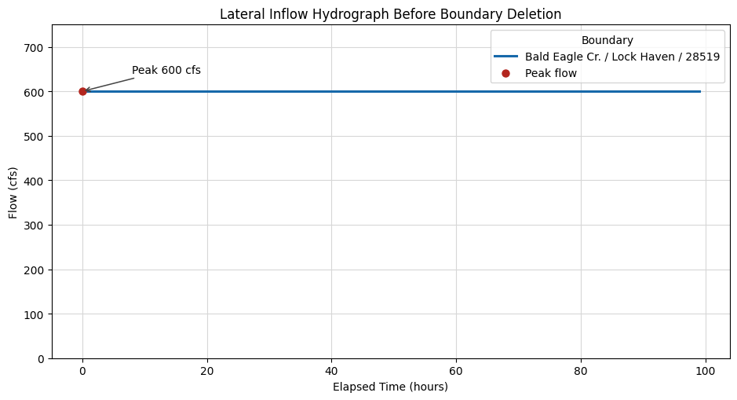
# Delete only the non-required lateral inflow Boundary Location block
delete_result = RasUnsteady.delete_boundary(
delete_unsteady_file,
river=target_river,
reach=target_reach,
river_station=target_station,
boundary_index=target_boundary_index,
ras_object=delete_ras,
)
print("Delete result:")
display(pd.DataFrame([delete_result]))
2026-06-03 15:12:40 - ras_commander.RasUnsteady - INFO - Deleted boundary Bald Eagle Cr./Lock Haven/28519 (Lateral Inflow Hydrograph) from BaldEagleDamBrk.u01: 21 lines removed
Delete result:
| unsteady_file | deleted | name | matched_location | bc_type | boundary_index | backup_path | lines_removed | boundaries_df_refreshed | required_boundary | |
|---|---|---|---|---|---|---|---|---|---|---|
| 0 | C:\GH\symphony-workspaces\ras-commander\CLB-88... | True | Bald Eagle Cr./Lock Haven/28519 | Bald Eagle Cr. ,Lock Haven ,28519 , ... | Lateral Inflow Hydrograph | 2 | C:\GH\symphony-workspaces\ras-commander\CLB-88... | 21 | True | False |
# Re-read boundaries_df and confirm the block was removed and a .bak was written
boundaries_after_delete = delete_ras.boundaries_df.copy()
lateral_after = boundaries_after_delete[
(boundaries_after_delete["unsteady_number"] == "01")
& (boundaries_after_delete["bc_type"] == "Lateral Inflow Hydrograph")
].copy()
delete_demo_bytes_after = delete_unsteady_file.read_bytes()
delete_demo_text_after = delete_demo_bytes_after.decode("utf-8", errors="ignore")
backup_path = Path(delete_result["backup_path"])
checks = {
"boundary_count_before": len(boundaries_before_delete),
"boundary_count_after": len(boundaries_after_delete),
"lateral_count_before_u01": len(lateral_before),
"lateral_count_after_u01": len(lateral_after),
"target_header_present_before": target_header in delete_demo_text_before,
"target_header_present_after": target_header in delete_demo_text_after,
"backup_exists": backup_path.exists(),
"backup_matches_pre_delete_file": backup_path.read_bytes() == delete_demo_bytes_before,
}
for key, value in checks.items():
print(f"{key}: {value}")
assert checks["target_header_present_before"] is True
assert checks["target_header_present_after"] is False
assert checks["backup_exists"] is True
assert checks["backup_matches_pre_delete_file"] is True
assert checks["boundary_count_after"] == checks["boundary_count_before"] - 1
assert checks["lateral_count_after_u01"] == checks["lateral_count_before_u01"] - 1
display(lateral_after[[c for c in display_cols if c in lateral_after.columns]])
boundary_count_before: 36
boundary_count_after: 35
lateral_count_before_u01: 4
lateral_count_after_u01: 3
target_header_present_before: True
target_header_present_after: False
backup_exists: True
backup_matches_pre_delete_file: True
| unsteady_number | boundary_condition_number | bc_type | river_reach_name | river_station | storage_area_name | |
|---|---|---|---|---|---|---|
| 12 | 01 | 3 | Lateral Inflow Hydrograph | Bald Eagle Cr. | Lock Haven | 1 |
| 13 | 01 | 4 | Lateral Inflow Hydrograph | Bald Eagle Cr. | Lock Haven | 76865 |
| 14 | 01 | 5 | Lateral Inflow Hydrograph | Bald Eagle Cr. | Lock Haven | 67130 |
# Confirm the post-delete project still initializes through ras-commander
post_delete_ras = RasPrj()
with temporary_logger_level("ras_commander.RasPrj", logging.ERROR):
post_delete_ras.initialize(delete_project_path, RAS_VERSION, suppress_logging=True)
print(f"Post-delete initialization succeeded: {len(post_delete_ras.boundaries_df)} boundaries parsed")
2026-06-03 15:12:40 - ras_commander.RasMap - INFO - Successfully parsed RASMapper file: C:\GH\symphony-workspaces\ras-commander\CLB-888\examples\example_projects\Dam Breaching_300_delete_boundary\BaldEagleDamBrk.rasmap
Post-delete initialization succeeded: 35 boundaries parsed
Step 4: Update Flow Title¶
The flow title in an unsteady flow file provides a description of the simulation scenario. The update_flow_title() method allows us to modify this title.
Parameters for RasUnsteady.update_flow_title():
- unsteady_file (str): Full path to the unsteady flow file
- new_title (str): New flow title (max 24 characters)
- ras_object (optional): Custom RAS object to use instead of the global one
Let's clone an unsteady flow file and update its title:
# Clone unsteady flow "01" to create a new unsteady flow file
new_unsteady_number = RasPlan.clone_unsteady("01")
print(f"New unsteady flow created: {new_unsteady_number}")
2026-06-03 15:12:40 - ras_commander.RasUtils - INFO - File cloned from C:\GH\symphony-workspaces\ras-commander\CLB-888\examples\example_projects\Muncie_300\Muncie.u01 to C:\GH\symphony-workspaces\ras-commander\CLB-888\examples\example_projects\Muncie_300\Muncie.u02
2026-06-03 15:12:40 - ras_commander.RasUtils - INFO - Project file updated with new Unsteady entry: 02
2026-06-03 15:12:40 - ras_commander.RasMap - INFO - Successfully parsed RASMapper file: C:\GH\symphony-workspaces\ras-commander\CLB-888\examples\example_projects\Muncie_300\Muncie.rasmap
New unsteady flow created: 02
'02'
# Get the path to the new unsteady flow file
new_unsteady_file = RasPlan.get_unsteady_path(new_unsteady_number)
print(f"New unsteady flow file path: {new_unsteady_file}")
New unsteady flow file path: C:\GH\symphony-workspaces\ras-commander\CLB-888\examples\example_projects\Muncie_300\Muncie.u02
WindowsPath('C:/GH/symphony-workspaces/ras-commander/CLB-888/examples/example_projects/Muncie_300/Muncie.u02')
# Get the current flow title
current_title = None
for _, row in ras.unsteady_df.iterrows():
if row['unsteady_number'] == new_unsteady_number and 'Flow Title' in row:
current_title = row['Flow Title']
break
print(f"Current flow title: {current_title}")
# Update the flow title
new_title = "Modified Flow Scenario"
RasUnsteady.update_flow_title(new_unsteady_file, new_title)
print(f"Updated flow title to: {new_title}")
# Refresh unsteady flow information to see the change
2026-06-03 15:12:40 - ras_commander.RasUnsteady - INFO - Updated Flow Title from 'Flow Boundary Conditions' to 'Modified Flow Scenario'
2026-06-03 15:12:40 - ras_commander.RasUnsteady - INFO - Applied Flow Title modification to C:\GH\symphony-workspaces\ras-commander\CLB-888\examples\example_projects\Muncie_300\Muncie.u02
Current flow title: Flow Boundary Conditions
Updated flow title to: Modified Flow Scenario
| unsteady_number | full_path | Flow Title | Program Version | Use Restart | Restart Filename | Precipitation Mode | Wind Mode | Met BC=Precipitation|Expanded View | Met BC=Precipitation|Gridded Source | description | |
|---|---|---|---|---|---|---|---|---|---|---|---|
| 0 | 01 | C:\GH\symphony-workspaces\ras-commander\CLB-88... | Flow Boundary Conditions | 6.30 | 0 | Muncie.p05.02JAN1900 1200.rst | Disable | No Wind Forces | 0 | DSS | |
| 1 | 02 | C:\GH\symphony-workspaces\ras-commander\CLB-88... | Modified Flow Scenario | 6.30 | 0 | Muncie.p05.02JAN1900 1200.rst | Disable | No Wind Forces | 0 | DSS |
Step 6: Working with Flow Tables¶
Flow tables in unsteady flow files contain the time-series data for boundary conditions. Let's explore how to extract and work with these tables using some of the advanced methods from the RasUnsteady class.
# Extract specific tables from the unsteady flow file
all_tables = RasUnsteady.extract_tables(new_unsteady_file)
print(f"Extracted {len(all_tables)} tables from the unsteady flow file.")
# Let's look at the available table names
print("\nAvailable tables:")
for table_name in all_tables.keys():
print(f" {table_name}")
# Select the first table for detailed analysis
if all_tables and len(all_tables) > 0:
first_table_name = list(all_tables.keys())[0]
first_table = all_tables[first_table_name]
print(f"\nDetailed look at table '{first_table_name}':")
print(f" Number of values: {len(first_table)}")
print(f" Min value: {first_table['Value'].min()}")
print(f" Max value: {first_table['Value'].max()}")
print(f" Mean value: {first_table['Value'].mean():.2f}")
print(f" First 10 values: {first_table['Value'].head(10).tolist()}")
# Create a technical hydrograph figure with explicit units.
try:
time_hours = np.arange(len(first_table), dtype=float)
values = first_table['Value'].to_numpy(dtype=float)
fig, ax = plt.subplots(figsize=(9.5, 5.2))
ax.plot(time_hours, values, color="#1769aa", linewidth=2.1, label="Original boundary table")
annotate_peak(ax, time_hours, values, label="Peak flow")
ax.set_title("Original Flow Hydrograph Table")
ax.set_xlabel("Elapsed Time (hours)")
ax.set_ylabel("Flow (cfs)")
ax.grid(True, color="#d7d7d7", linewidth=0.8)
ax.legend(loc="best")
fig.tight_layout()
plt.show()
except Exception as e:
print(f"Could not create visualization: {e}")
else:
print("No tables found in the unsteady flow file.")
Extracted 1 tables from the unsteady flow file.
Available tables:
Flow Hydrograph=
Detailed look at table 'Flow Hydrograph=':
Number of values: 65
Min value: 5000.0
Max value: 21000.0
Mean value: 13523.08
First 10 values: [13500.0, 14000.0, 14500.0, 15000.0, 15500.0, 16000.0, 16500.0, 17000.0, 17500.0, 18000.0]
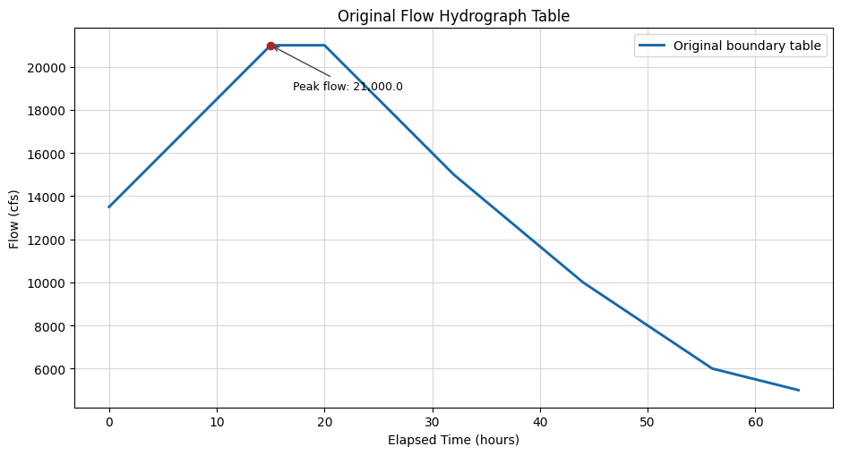
Step 7: Modifying Flow Tables¶
Now let's demonstrate how to modify a flow table and write it back to the unsteady flow file. For this example, we'll scale all the values in a table by a factor.
Scaling existing values down by a 0.75 scale factor¶
# First, identify tables in the unsteady flow file
tables = RasUnsteady.identify_tables(open(new_unsteady_file, 'r').readlines())
print(f"Identified {len(tables)} tables in the unsteady flow file.")
# Let's look at the first flow hydrograph table
flow_hydrograph_tables = [t for t in tables if t[0] == 'Flow Hydrograph=']
if flow_hydrograph_tables:
table_name, start_line, end_line = flow_hydrograph_tables[0]
print(f"\nSelected table: {table_name}")
print(f" Start line: {start_line}")
print(f" End line: {end_line}")
# Parse the table
lines = open(new_unsteady_file, 'r').readlines()
table_df = RasUnsteady.parse_fixed_width_table(lines, start_line, end_line)
print(f"\nOriginal table statistics:")
print(f" Number of values: {len(table_df)}")
print(f" Min value: {table_df['Value'].min()}")
print(f" Max value: {table_df['Value'].max()}")
print(f" First 5 values: {table_df['Value'].head(5).tolist()}")
# Modify the table - let's scale all values by 75%
scale_factor = 0.75
table_df['Value'] = table_df['Value'] * scale_factor
print(f"\nModified table statistics (scaled by {scale_factor}):")
print(f" Number of values: {len(table_df)}")
print(f" Min value: {table_df['Value'].min()}")
print(f" Max value: {table_df['Value'].max()}")
print(f" First 5 values: {table_df['Value'].head(5).tolist()}")
# Write the modified table back to the file
RasUnsteady.write_table_to_file(new_unsteady_file, table_name, table_df, start_line)
print(f"\nUpdated table written back to the unsteady flow file.")
# Re-read the table to verify changes
lines = open(new_unsteady_file, 'r').readlines()
updated_table_df = RasUnsteady.parse_fixed_width_table(lines, start_line, end_line)
print(f"\nVerified updated table statistics:")
print(f" Number of values: {len(updated_table_df)}")
print(f" Min value: {updated_table_df['Value'].min()}")
print(f" Max value: {updated_table_df['Value'].max()}")
print(f" First 5 values: {updated_table_df['Value'].head(5).tolist()}")
else:
print("No flow hydrograph tables found in the unsteady flow file.")
2026-06-03 15:12:40 - ras_commander.RasUnsteady - INFO - Successfully updated table 'Flow Hydrograph=' in C:\GH\symphony-workspaces\ras-commander\CLB-888\examples\example_projects\Muncie_300\Muncie.u02
Identified 1 tables in the unsteady flow file.
Selected table: Flow Hydrograph=
Start line: 8
End line: 15
Original table statistics:
Number of values: 65
Min value: 5000.0
Max value: 21000.0
First 5 values: [13500.0, 14000.0, 14500.0, 15000.0, 15500.0]
Modified table statistics (scaled by 0.75):
Number of values: 65
Min value: 3750.0
Max value: 15750.0
First 5 values: [10125.0, 10500.0, 10875.0, 11250.0, 11625.0]
Updated table written back to the unsteady flow file.
Verified updated table statistics:
Number of values: 65
Min value: 3750.0
Max value: 15750.0
First 5 values: [10125.0, 10500.0, 10875.0, 11250.0, 11625.0]
# Extract specific tables from the unsteady flow file
all_tables = RasUnsteady.extract_tables(new_unsteady_file)
# Get the updated flow hydrograph table
flow_hydrograph_tables = [t for t in all_tables.keys() if 'Flow Hydrograph=' in t]
if flow_hydrograph_tables:
table_name = flow_hydrograph_tables[0]
table_df = all_tables[table_name]
# Create visualization of the updated flow values
time_hours = np.arange(len(table_df), dtype=float)
values = table_df['Value'].to_numpy(dtype=float)
fig, ax = plt.subplots(figsize=(9.5, 5.2))
ax.plot(time_hours, values, color="#1769aa", linewidth=2.1, label="Updated flow")
annotate_peak(ax, time_hours, values, label="Peak flow")
ax.set_title("Updated Flow Hydrograph After 0.75 Scale Factor")
ax.set_xlabel("Elapsed Time (hours)")
ax.set_ylabel("Flow (cfs)")
ax.grid(True, color="#d7d7d7", linewidth=0.8)
ax.legend(loc="best")
fig.tight_layout()
plt.show()
# Print summary statistics
print(f"\nUpdated flow hydrograph statistics:")
print(f" Number of values: {len(table_df)}")
print(f" Min flow: {table_df['Value'].min():.1f} cfs")
print(f" Max flow: {table_df['Value'].max():.1f} cfs")
print(f" Mean flow: {table_df['Value'].mean():.1f} cfs")
else:
print("No flow hydrograph tables found in the unsteady flow file.")
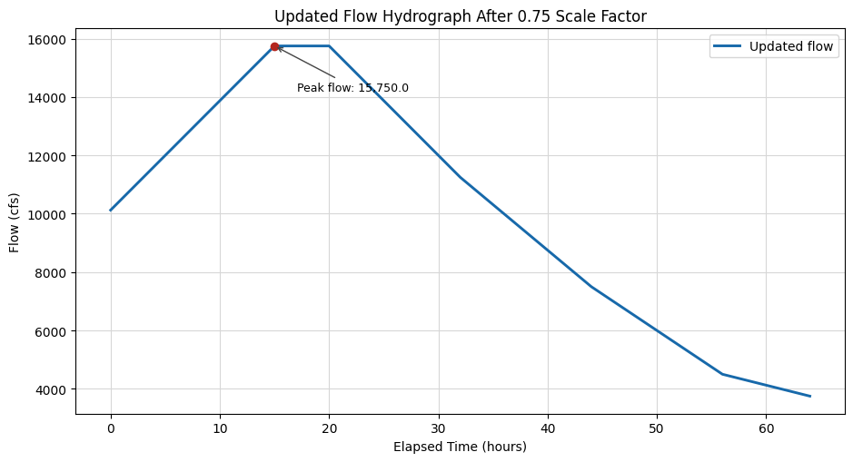
Updated flow hydrograph statistics:
Number of values: 65
Min flow: 3750.0 cfs
Max flow: 15750.0 cfs
Mean flow: 10142.3 cfs
2026-06-03 15:12:40 - ras_commander.RasCmdr - INFO - Using ras_object with project folder: C:\GH\symphony-workspaces\ras-commander\CLB-888\examples\example_projects\Muncie_300
2026-06-03 15:12:40 - ras_commander.RasCmdr - INFO - Running HEC-RAS from the Command Line:
2026-06-03 15:12:40 - ras_commander.RasCmdr - INFO - Running command: "C:\Program Files (x86)\HEC\HEC-RAS\7.0\Ras.exe" -c "C:\GH\symphony-workspaces\ras-commander\CLB-888\examples\example_projects\Muncie_300\Muncie.prj" "C:\GH\symphony-workspaces\ras-commander\CLB-888\examples\example_projects\Muncie_300\Muncie.p01"
2026-06-03 15:12:40 - ras_commander.RasDialogWatchdog - INFO - DialogWatchdog started — polling every 1.5s for RAS dialog windows
2026-06-03 15:12:53 - ras_commander.RasCmdr - INFO - HEC-RAS execution completed for plan: 01
2026-06-03 15:12:53 - ras_commander.RasCmdr - INFO - Total run time for plan 01: 12.82 seconds
2026-06-03 15:12:53 - ras_commander.RasDialogWatchdog - INFO - DialogWatchdog stopped — no dialogs encountered
ComputeResult(SUCCESS, results_df_row=available)
# Display results summary from results_df after Plan 01 execution
# This shows execution status, timing, and any errors/warnings for each plan
ras.results_df[['plan_number', 'plan_title', 'completed', 'has_errors', 'has_warnings', 'runtime_complete_process_hours']]
| plan_number | plan_title | completed | has_errors | has_warnings | runtime_complete_process_hours | |
|---|---|---|---|---|---|---|
| 0 | 03 | Unsteady Run with 2D 50ft Grid | False | False | False | NaN |
| 1 | 04 | Unsteady Run with 2D 50ft User n Value R | False | False | False | NaN |
| 2 | 01 | Unsteady Multi 9-SA run | True | False | False | 0.003182 |
# Get cross section results timeseries as xarray dataset
xsec_results_xr_plan1 = HdfResultsXsec.get_xsec_timeseries("01")
<xarray.Dataset> Size: 371kB
Dimensions: (time: 289, cross_section: 61)
Coordinates:
* time (time) datetime64[us] 2kB 1900-01-02 ... 1900-0...
* cross_section (cross_section) <U42 10kB 'White Mun...
River (cross_section) <U5 1kB 'White' ... 'White'
Reach (cross_section) <U6 1kB 'Muncie' ... 'Muncie'
Station (cross_section) <U8 2kB '15696.24' ... '237.6455'
Name (cross_section) <U1 244B '' '' '' '' ... '' '' ''
Maximum_Water_Surface (cross_section) float32 244B 955.4 955.2 ... 938.7
Maximum_Flow (cross_section) float32 244B 2.1e+04 ... 2.1e+04
Maximum_Channel_Velocity (cross_section) float32 244B 5.293 6.224 ... 6.081
Maximum_Velocity_Total (cross_section) float32 244B 3.472 4.026 ... 5.999
Maximum_Flow_Lateral (cross_section) float32 244B 0.0 0.0 ... 0.0 0.0
Data variables:
Water_Surface (time, cross_section) float32 71kB 951.4 ... 937.9
Velocity_Total (time, cross_section) float32 71kB 3.472 ... 5.909
Velocity_Channel (time, cross_section) float32 71kB 5.293 ... 5.934
Flow_Lateral (time, cross_section) float32 71kB 0.0 0.0 ... 0.0
Flow (time, cross_section) float32 71kB 1.35e+04 ......
Attributes:
description: Cross-section results extracted from HEC-RAS HDF file
source_file: C:\GH\symphony-workspaces\ras-commander\CLB-888\examples\ex...# Print time series for specific cross section
# Use a valid cross section from the Muncie project
target_xs = "White Muncie 15696.24"
target_xs_label = "White / Muncie / RS 15696.24"
print("\nTime Series Data for Cross Section:", target_xs)
for var in ['Water_Surface', 'Velocity_Total', 'Velocity_Channel', 'Flow_Lateral', 'Flow']:
print(f"\n{var}:")
print(f"Plan 1:")
print(xsec_results_xr_plan1[var].sel(cross_section=target_xs).values[:5])
# Create time series plots
if generate_plots:
variables = ['Water_Surface', 'Velocity_Total', 'Velocity_Channel', 'Flow_Lateral', 'Flow']
time_values1 = pd.to_datetime(xsec_results_xr_plan1.time.values)
for var in variables:
values1 = xsec_results_xr_plan1[var].sel(cross_section=target_xs).values
labels = PLOT_LABELS.get(var, {"title": var.replace("_", " "), "ylabel": var.replace("_", " ")})
fig, ax = plt.subplots(figsize=(9.5, 5.2))
ax.plot(time_values1, values1, '-', linewidth=2, color="#1769aa", label='Plan 01')
annotate_peak(ax, time_values1, values1, label="Peak")
ax.set_title(f"{labels['title']} at {target_xs_label}")
ax.set_xlabel('Simulation Time')
ax.set_ylabel(labels['ylabel'])
ax.grid(True, color="#d7d7d7", linewidth=0.8)
ax.tick_params(axis='x', rotation=45)
ax.legend(loc="best")
fig.tight_layout()
plt.show()
Time Series Data for Cross Section: White Muncie 15696.24
Water_Surface:
Plan 1:
[951.4461 952.6853 952.97394 952.9312 952.8653 ]
Velocity_Total:
Plan 1:
[3.4716372 2.9427826 2.8470454 2.8707995 2.9032633]
Velocity_Channel:
Plan 1:
[5.29273 4.5389576 4.4022117 4.437299 4.4849114]
Flow_Lateral:
Plan 1:
[0. 0. 0. 0. 0.]
Flow:
Plan 1:
[13500. 13541.667 13583.333 13625. 13666.667]
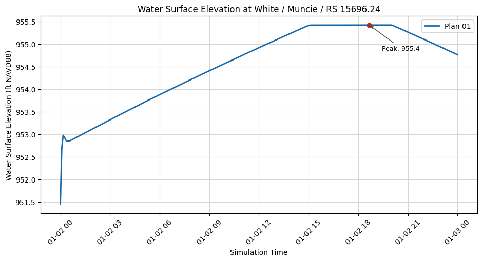
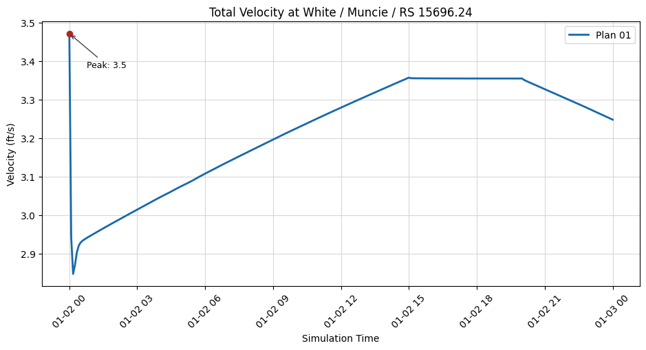
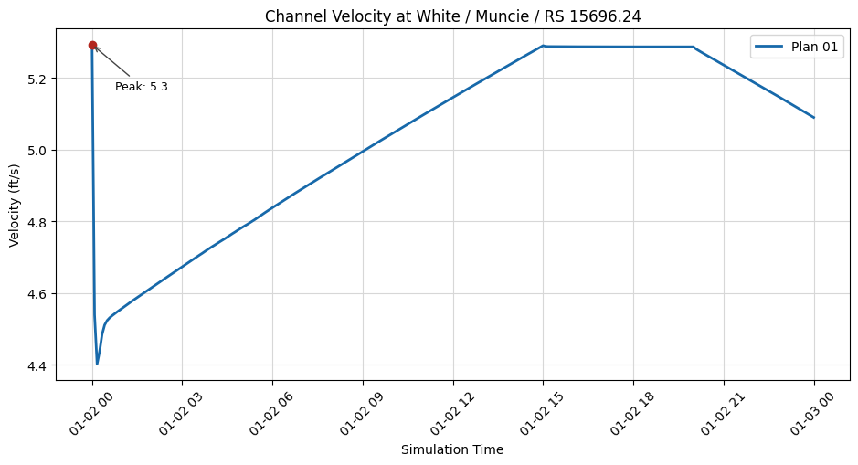
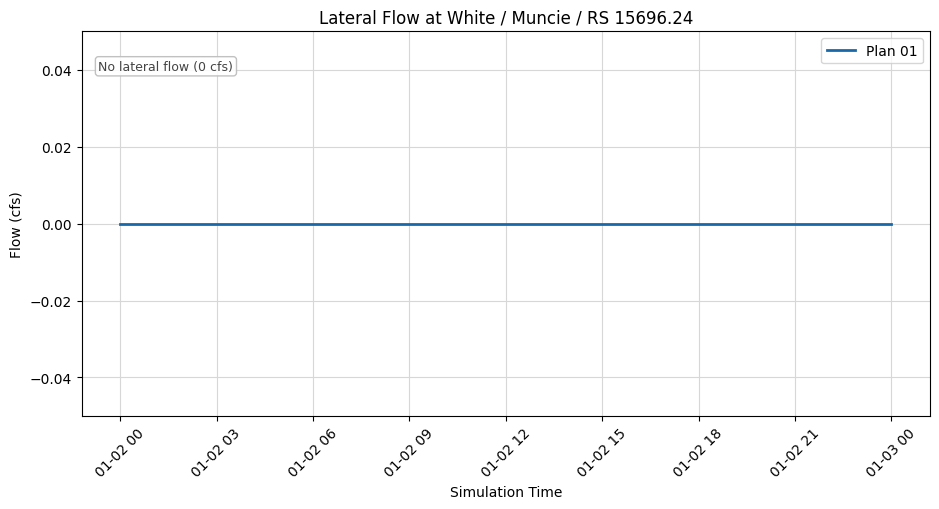
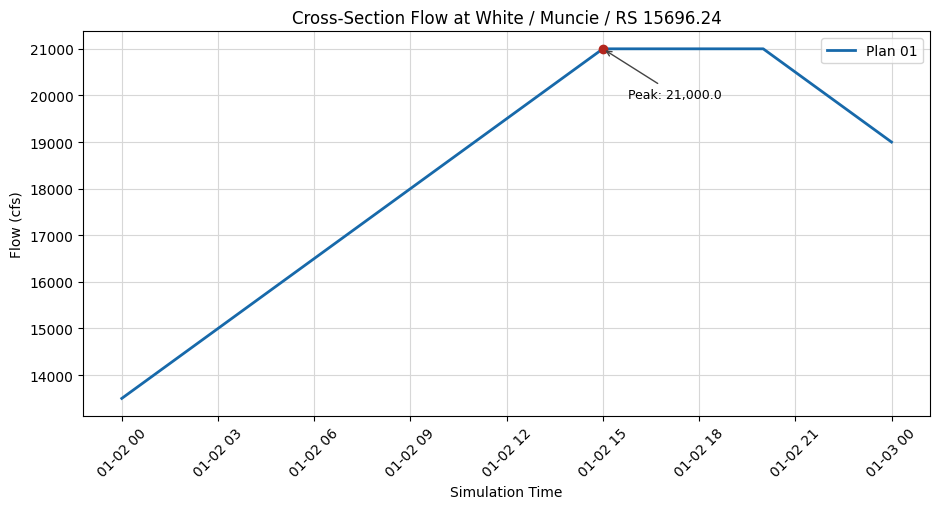
Step 8: Applying the Updated Unsteady Flow to a New Plan¶
Now that we've modified an unsteady flow file, let's create a plan that uses it, and compute the results.
# Clone an existing plan
new_plan_number = RasPlan.clone_plan("01", new_plan_shortid="Modified Flow Test")
print(f"New plan created: {new_plan_number}")
2026-06-03 15:12:54 - ras_commander.RasUtils - INFO - File cloned from C:\GH\symphony-workspaces\ras-commander\CLB-888\examples\example_projects\Muncie_300\Muncie.p01 to C:\GH\symphony-workspaces\ras-commander\CLB-888\examples\example_projects\Muncie_300\Muncie.p02
2026-06-03 15:12:54 - ras_commander.RasUtils - INFO - Successfully updated file: C:\GH\symphony-workspaces\ras-commander\CLB-888\examples\example_projects\Muncie_300\Muncie.p02
2026-06-03 15:12:54 - ras_commander.RasUtils - INFO - Project file updated with new Plan entry: 02
2026-06-03 15:12:54 - ras_commander.RasMap - INFO - Successfully parsed RASMapper file: C:\GH\symphony-workspaces\ras-commander\CLB-888\examples\example_projects\Muncie_300\Muncie.rasmap
New plan created: 02
'02'
# Get the current plan title and shortid
current_title = RasPlan.get_plan_title(new_plan_number)
current_shortid = RasPlan.get_shortid(new_plan_number)
print(f"Current plan title: {current_title}")
print(f"Current plan shortid: {current_shortid}")
2026-06-03 15:12:54 - ras_commander.RasPlan - INFO - Retrieved Plan Title: Unsteady Multi 9-SA run
2026-06-03 15:12:54 - ras_commander.RasPlan - INFO - Retrieved Short Identifier: Modified Flow Test
Current plan title: Unsteady Multi 9-SA run
Current plan shortid: Modified Flow Test
# Update the title and shortid to append "clonedplan"
new_title = f"{current_title} 0.75 Flow Scale Factor"
new_shortid = "Mod Flow 0.75 FSF"
RasPlan.set_plan_title(new_plan_number, new_title)
RasPlan.set_shortid(new_plan_number, new_shortid)
print()
print(f"Updated plan title: {RasPlan.get_plan_title(new_plan_number)}")
print(f"Updated plan shortid: {RasPlan.get_shortid(new_plan_number)}")
2026-06-03 15:12:54 - ras_commander.RasPlan - INFO - Updated Plan Title in plan file to: Unsteady Multi 9-SA run 0.75 Flow Scale Factor
2026-06-03 15:12:54 - ras_commander.RasPlan - INFO - Updated Short Identifier in plan file to: Mod Flow 0.75 FSF
2026-06-03 15:12:54 - ras_commander.RasPlan - INFO - Retrieved Plan Title: Unsteady Multi 9-SA run 0.75 Flow Scale Factor
2026-06-03 15:12:54 - ras_commander.RasPlan - INFO - Retrieved Short Identifier: Mod Flow 0.75 FSF
Updated plan title: Unsteady Multi 9-SA run 0.75 Flow Scale Factor
Updated plan shortid: Mod Flow 0.75 FSF
'02'
# Set the modified unsteady flow for the new plan
RasPlan.set_unsteady(new_plan_number, new_unsteady_number)
print(f"Set unsteady flow {new_unsteady_number} for plan {new_plan_number}")
Set unsteady flow 02 for plan 02
# Get the path to the new plan file
new_plan_path = RasPlan.get_plan_path(new_plan_number)
# Print contents of new plan file to confirm changes
# Read and display the contents of the plan file
with open(new_plan_path, 'r') as f:
plan_contents = f.read()
print(f"Contents of plan file {new_plan_number}:")
print(plan_contents)
Contents of plan file 02:
Plan Title=Unsteady Multi 9-SA run 0.75 Flow Scale Factor
Program Version=5.00
Short Identifier=Mod Flow 0.75 FSF
Simulation Date=02JAN1900,0000,02JAN1900,2400
Geom File=g01
Flow File=u02
Subcritical Flow
K Sum by GR= 0
Std Step Tol= 0.01
Critical Tol= 0.01
Num of Std Step Trials= 20
Max Error Tol= 0.3
Flow Tol Ratio= 0.001
Split Flow NTrial= 30
Split Flow Tol= 0.02
Split Flow Ratio= 0.02
Log Output Level= 0
Friction Slope Method= 1
Unsteady Friction Slope Method= 2
Unsteady Bridges Friction Slope Method= 1
Parabolic Critical Depth
Global Vel Dist= 0 , 0 , 0
Global Log Level= 0
CheckData=True
Encroach Param=-1 ,0,0, 0
Computation Interval=15SEC
Output Interval=5MIN
Run HTab= 1
Run UNet= 1
Run Sediment= 0
Run PostProcess= 1
Run WQNet= 0
Run RASMapper= 0
UNET Theta= 1
UNET Theta Warmup= 1
UNET ZTol= 0.02
UNET ZSATol= 0.02
UNET QTol=
UNET MxIter= 20
UNET Max Iter WO Improvement= 0
UNET MaxInSteps= 20
UNET DtIC= 0
UNET DtMin= 0
UNET MaxCRTS= 20
UNET WFStab= 2
UNET SFStab= 1
UNET WFX= 3
UNET SFX= 1
UNET DSS MLevel= 4
UNET Pardiso=0
UNET DZMax Abort= 100
UNET Use Existing IB Tables=-1
UNET Froude Reduction=False
UNET Froude Limit= 1
UNET Froude Power= 10
UNET Time Slicing=0,0, 5
UNET Junction Losses=0
UNET D1 Cores= 0
UNET D2 Coriolis=-1
UNET D2 Cores= 0
UNET D2 Theta= 1
UNET D2 Theta Warmup= 1
UNET D2 Z Tol= 0.01
UNET D2 Max Iterations= 20
UNET D2 Equation= 0
UNET D2 TotalICTime=
UNET D2 RampUpFraction=0.5
UNET D2 TimeSlices= 1
UNET D2 Eddy Viscosity=
UNET D2 BCVolumeCheck=0
UNET D2 Latitude=
UNET D1D2 MaxIter= 0
UNET D1D2 ZTol=0.01
UNET D1D2 QTol=0.1
UNET D1D2 MinQTol=1
Instantaneous Interval=1HOUR
Mapping Interval=5MIN
DSS File=dss
Write IC File= 0
Write IC File at Fixed DateTime=0
IC Time=,,
Write IC File Reoccurance=
Write IC File at Sim End=0
Echo Input=False
Echo Parameters=False
Echo Output=False
Write Detailed= 1
HDF Write Warmup=0
HDF Write Time Slices=0
HDF Flush=0
HDF Compression= 1
HDF Chunk Size= 1
HDF Spatial Parts= 1
HDF Use Max Rows=0
HDF Fixed Rows= 1
Breach Loc=White ,Muncie ,13214 ,True,
Breach Method= 0
Breach Geom=600,100,942,0.2,0.2,True,0.5,945,2,2.6
Breach Start=True,947,,,False,,
Breach Progression= 2
0 0 1 1
Simplified Physical Breach Downcutting= 2
0 0 1 1
Simplified Physical Breach Widening= 2
0 0 1 1
Starting Notch Depth= 3.402823E+38
Initial Piping Diameter= 3.402823E+38
Mass Wasting Options= 0
Mass Wasting Width= 3.402823E+38
Mass Wasting Duration= 3.402823E+38
Mass Wasting Final Bottom Elevation= 3.402823E+38
Breach Use User Defined Growth Ratio=0
Breach User Defined Growth Ratio=1
Breach Loc=White ,Muncie ,7300 ,False,
Breach Method= 0
Breach Geom=,,,,,False,0.5,,,2.6
Breach Start=True,,,,False,,
Breach Progression= 2
0 0 1 1
Simplified Physical Breach Downcutting= 2
0 0 1 1
Simplified Physical Breach Widening= 2
0 0 1 1
Starting Notch Depth= 3.402823E+38
Initial Piping Diameter= 3.402823E+38
Mass Wasting Options= 0
Mass Wasting Width= 3.402823E+38
Mass Wasting Duration= 3.402823E+38
Mass Wasting Final Bottom Elevation= 3.402823E+38
Breach Use User Defined Growth Ratio=0
Breach User Defined Growth Ratio=1
Breach Loc=White ,Muncie ,12300 ,False,
Breach Method= 0
Breach Geom=,,,,,False,0.5,,,2.6
Breach Start=True,,,,False,,
Breach Progression= 2
0 0 1 1
Simplified Physical Breach Downcutting= 2
0 0 1 1
Simplified Physical Breach Widening= 2
0 0 1 1
Starting Notch Depth= 3.402823E+38
Initial Piping Diameter= 3.402823E+38
Mass Wasting Options= 0
Mass Wasting Width= 3.402823E+38
Mass Wasting Duration= 3.402823E+38
Mass Wasting Final Bottom Elevation= 3.402823E+38
Breach Use User Defined Growth Ratio=0
Breach User Defined Growth Ratio=1
Breach Loc=White ,Muncie ,9854 ,False,
Breach Method= 0
Breach Geom=,,,,,False,0.5,,,2.6
Breach Start=True,,,,False,,
Breach Progression= 2
0 0 1 1
Simplified Physical Breach Downcutting= 2
0 0 1 1
Simplified Physical Breach Widening= 2
0 0 1 1
Starting Notch Depth= 3.402823E+38
Initial Piping Diameter= 3.402823E+38
Mass Wasting Options= 0
Mass Wasting Width= 3.402823E+38
Mass Wasting Duration= 3.402823E+38
Mass Wasting Final Bottom Elevation= 3.402823E+38
Breach Use User Defined Growth Ratio=0
Breach User Defined Growth Ratio=1
Breach Loc=White ,Muncie ,9200 ,False,
Breach Method= 0
Breach Geom=,,,,,False,0.5,,,2.6
Breach Start=True,,,,False,,
Breach Progression= 2
0 0 1 1
Simplified Physical Breach Downcutting= 2
0 0 1 1
Simplified Physical Breach Widening= 2
0 0 1 1
Starting Notch Depth= 3.402823E+38
Initial Piping Diameter= 3.402823E+38
Mass Wasting Options= 0
Mass Wasting Width= 3.402823E+38
Mass Wasting Duration= 3.402823E+38
Mass Wasting Final Bottom Elevation= 3.402823E+38
Breach Use User Defined Growth Ratio=0
Breach User Defined Growth Ratio=1
Breach Loc=White ,Muncie ,8000 ,False,
Breach Method= 0
Breach Geom=,,,,,False,0.5,,,2.6
Breach Start=True,,,,False,,
Breach Progression= 2
0 0 1 1
Simplified Physical Breach Downcutting= 2
0 0 1 1
Simplified Physical Breach Widening= 2
0 0 1 1
Starting Notch Depth= 3.402823E+38
Initial Piping Diameter= 3.402823E+38
Mass Wasting Options= 0
Mass Wasting Width= 3.402823E+38
Mass Wasting Duration= 3.402823E+38
Mass Wasting Final Bottom Elevation= 3.402823E+38
Breach Use User Defined Growth Ratio=0
Breach User Defined Growth Ratio=1
Breach Loc=White ,Muncie ,15323.14,False,
Breach Method= 0
Breach Geom=,,,,,False,0.5,,,2.6
Breach Start=True,,,,False,,
Breach Progression= 2
0 0 1 1
Simplified Physical Breach Downcutting= 2
0 0 1 1
Simplified Physical Breach Widening= 2
0 0 1 1
Starting Notch Depth= 3.402823E+38
Initial Piping Diameter= 3.402823E+38
Mass Wasting Options= 0
Mass Wasting Width= 3.402823E+38
Mass Wasting Duration= 3.402823E+38
Mass Wasting Final Bottom Elevation= 3.402823E+38
Breach Use User Defined Growth Ratio=0
Breach User Defined Growth Ratio=1
Breach Loc=White ,Muncie ,13859 ,False,
Breach Method= 0
Breach Geom=,,,,,False,0.5,,,2.6
Breach Start=True,,,,False,,
Breach Progression= 2
0 0 1 1
Simplified Physical Breach Downcutting= 2
0 0 1 1
Simplified Physical Breach Widening= 2
0 0 1 1
Starting Notch Depth= 3.402823E+38
Initial Piping Diameter= 3.402823E+38
Mass Wasting Options= 0
Mass Wasting Width= 3.402823E+38
Mass Wasting Duration= 3.402823E+38
Mass Wasting Final Bottom Elevation= 3.402823E+38
Breach Use User Defined Growth Ratio=0
Breach User Defined Growth Ratio=1
Calibration Method= 0
Calibration Iterations= 100
Calibration Max Change=0.05
Calibration Tolerance=0.01
Calibration Maximum=1.5
Calibration Minimum=0.5
Calibration Optimization Method= 0
Calibration Window=,,,
WQ AD Non Conservative
WQ ULTIMATE=-1
WQ Max Comp Step=1HOUR
WQ Output Interval=15MIN
WQ Output Selected Increments= 0
WQ Output face flow=0
WQ Output face velocity=0
WQ Output face area=0
WQ Output face dispersion=0
WQ Output cell volume=0
WQ Output cell surface area=0
WQ Output cell continuity=0
WQ Output cumulative cell continuity=0
WQ Output face conc=0
WQ Output face dconc_dx=0
WQ Output face courant=0
WQ Output face peclet=0
WQ Output face adv mass=0
WQ Output face disp mass=0
WQ Output cell mass=0
WQ Output cell source sink temp=0
WQ Output nsm pathways=0
WQ Output nsm derived pathways=0
WQ Output MaxMinRange=-1
WQ Daily Max Min Mean=-1
WQ Daily Range=0
WQ Daily Time=0
WQ Create Restart=0
WQ Fixed Restart=0
WQ Restart Simtime=
WQ Restart Date=
WQ Restart Hour=
WQ System Summary=0
WQ Write To DSS=0
WQ Use Fixed Temperature=0
WQ Fixed Temperature=
Sorting and Armoring Iterations= 10
XS Update Threshold= 0.02
Bed Roughness Predictor= 0
Hydraulics Update Threshold= 0.02
Energy Slope Method= 1
Volume Change Method= 0
Sediment Retention Method= 0
XS Weighting Method= 0
Number of US Weighted Cross Sections= 1
Number of DS Weighted Cross Sections= 1
Upstream XS Weight=0.25
Main XS Weight=0.5
Downstream XS Weight=0.25
Number of DS XS's Weighted with US Boundary= 1
Upstream Boundary Weight= 1
Weight of XSs Associated with US Boundary= 0
Number of US XS's Weighted with DS Boundary= 1
Downstream Boundary Weight= 0.5
Weight of XSs Associated with DS Boundary= 0.5
Sediment Output Level= 4
Mass or Volume Output= 0
Output Increment Type= 1
Profile and TS Output Increment= 10
XS Output Flag= 0
XS Output Increment= 10
Write Gradation File= 0
Read Gradation Hotstart= 0
Gradation File Name=
Write HDF5 File= 0
Write DSS Sediment File= 0
SV Curve= 0
Specific Gage Flag= 0
ADH Filename=Muncie..bc
ADH Link=White ,Muncie ,13214 LS,3,Flow,-1
# Update the plan description
new_description = "Test plan using modified unsteady flow\nFlow scaled to 75% of original\nWith restart file enabled"
RasPlan.update_plan_description(new_plan_number, new_description)
print(f"Updated plan description for plan {new_plan_number}")
# Set computation options
RasPlan.set_num_cores(new_plan_number, 2)
# Consider any other changes you want to make at this step, such as computation intervals etc:
# RasPlan.update_plan_intervals(
# new_plan_number,
# computation_interval="1MIN",
# output_interval="15MIN",
# mapping_interval="1HOUR"
#)
2026-06-03 15:12:54 - ras_commander.RasUtils - INFO - Successfully updated file: C:\GH\symphony-workspaces\ras-commander\CLB-888\examples\example_projects\Muncie_300\Muncie.p02
Updated plan description for plan 02
# Display results summary from results_df after modified plan execution
# This shows execution status, timing, and any errors/warnings for each plan
ras.results_df[['plan_number', 'plan_title', 'completed', 'has_errors', 'has_warnings', 'runtime_complete_process_hours']]
| plan_number | plan_title | completed | has_errors | has_warnings | runtime_complete_process_hours | |
|---|---|---|---|---|---|---|
| 0 | 01 | Unsteady Multi 9-SA run | True | False | False | 0.003182 |
| 1 | 03 | Unsteady Run with 2D 50ft Grid | False | False | False | NaN |
| 2 | 04 | Unsteady Run with 2D 50ft User n Value R | False | False | False | NaN |
| 3 | 02 | Unsteady Multi 9-SA run | False | False | False | NaN |
# Compute the plan
print(f"\nComputing plan {new_plan_number} with modified unsteady flow...")
success = RasCmdr.compute_plan(new_plan_number)
2026-06-03 15:12:54 - ras_commander.RasCmdr - INFO - Using ras_object with project folder: C:\GH\symphony-workspaces\ras-commander\CLB-888\examples\example_projects\Muncie_300
2026-06-03 15:12:54 - ras_commander.RasCmdr - INFO - Running HEC-RAS from the Command Line:
2026-06-03 15:12:54 - ras_commander.RasCmdr - INFO - Running command: "C:\Program Files (x86)\HEC\HEC-RAS\7.0\Ras.exe" -c "C:\GH\symphony-workspaces\ras-commander\CLB-888\examples\example_projects\Muncie_300\Muncie.prj" "C:\GH\symphony-workspaces\ras-commander\CLB-888\examples\example_projects\Muncie_300\Muncie.p02"
2026-06-03 15:12:54 - ras_commander.RasDialogWatchdog - INFO - DialogWatchdog started — polling every 1.5s for RAS dialog windows
Computing plan 02 with modified unsteady flow...
2026-06-03 15:13:02 - ras_commander.RasCmdr - INFO - HEC-RAS execution completed for plan: 02
2026-06-03 15:13:02 - ras_commander.RasCmdr - INFO - Total run time for plan 02: 7.60 seconds
2026-06-03 15:13:02 - ras_commander.RasDialogWatchdog - INFO - DialogWatchdog stopped — no dialogs encountered
if success:
print(f"Plan {new_plan_number} computed successfully")
# Check the results path
results_path = RasPlan.get_results_path(new_plan_number)
if results_path:
print(f"Results available at: {results_path}")
# If it exists, get its size
results_file = Path(results_path)
if results_file.exists():
size_mb = results_file.stat().st_size / (1024 * 1024)
print(f"Results file size: {size_mb:.2f} MB")
else:
print("No results found.")
else:
print(f"Failed to compute plan {new_plan_number}")
Plan 02 computed successfully
Results available at: C:\GH\symphony-workspaces\ras-commander\CLB-888\examples\example_projects\Muncie_300\Muncie.p02.hdf
Results file size: 4.43 MB
| plan_number | unsteady_number | geometry_number | Plan Title | Program Version | Short Identifier | Simulation Date | Computation Interval | Mapping Interval | Run HTab | Run UNet | Run Sediment | Run PostProcess | Run WQNet | UNET Use Existing IB Tables | UNET 1D Methodology | Write IC File | Write IC File at Fixed DateTime | IC Time | Write IC File Reoccurance | Write IC File at Sim End | UNET D1 Cores | UNET D2 Cores | PS Cores | DSS File | Friction Slope Method | UNET D2 SolverType | UNET D2 Name | description | HDF_Results_Path | Geom File | Geom Path | Flow File | Flow Path | full_path | |
|---|---|---|---|---|---|---|---|---|---|---|---|---|---|---|---|---|---|---|---|---|---|---|---|---|---|---|---|---|---|---|---|---|---|---|---|
| 0 | 01 | 01 | 01 | Unsteady Multi 9-SA run | 5.00 | 9-SAs | 02JAN1900,0000,02JAN1900,2400 | 15SEC | 5MIN | 1 | 1 | 0 | 1 | 0 | -1 | NaN | 0 | 0 | ,, | 0 | 0 | 0 | None | dss | 1 | NaN | NaN | NaN | C:\GH\symphony-workspaces\ras-commander\CLB-88... | 01 | C:\GH\symphony-workspaces\ras-commander\CLB-88... | 01 | C:\GH\symphony-workspaces\ras-commander\CLB-88... | C:\GH\symphony-workspaces\ras-commander\CLB-88... | |
| 1 | 03 | 01 | 02 | Unsteady Run with 2D 50ft Grid | 5.10 | 2D 50ft Grid | 02JAN1900,0000,02JAN1900,2400 | 10SEC | 5MIN | -1 | -1 | 0 | -1 | 0 | -1 | Finite Difference | 0 | 0 | ,, | 0 | 0 | 4 | None | dss | 1 | Pardiso (Direct) | 2D Interior Area | NaN | NaN | 02 | C:\GH\symphony-workspaces\ras-commander\CLB-88... | 01 | C:\GH\symphony-workspaces\ras-commander\CLB-88... | C:\GH\symphony-workspaces\ras-commander\CLB-88... | |
| 2 | 04 | 01 | 04 | Unsteady Run with 2D 50ft User n Value R | 5.10 | 50ft User n Regions | 02JAN1900,0000,02JAN1900,2400 | 10SEC | 5MIN | 1 | 1 | 0 | 1 | 0 | -1 | Finite Difference | 0 | 0 | ,, | 0 | 0 | 6 | None | dss | 1 | Pardiso (Direct) | 2D Interior Area | NaN | NaN | 04 | C:\GH\symphony-workspaces\ras-commander\CLB-88... | 01 | C:\GH\symphony-workspaces\ras-commander\CLB-88... | C:\GH\symphony-workspaces\ras-commander\CLB-88... | |
| 3 | 02 | 02 | 01 | Unsteady Multi 9-SA run 0.75 Flow Scale Factor | 5.00 | Mod Flow 0.75 FSF | 02JAN1900,0000,02JAN1900,2400 | 15SEC | 5MIN | 1 | 1 | 0 | 1 | 0 | -1 | NaN | 0 | 0 | ,, | 0 | 2 | 2 | None | dss | 1 | NaN | NaN | Test plan using modified unsteady flow\nFlow s... | C:\GH\symphony-workspaces\ras-commander\CLB-88... | 01 | C:\GH\symphony-workspaces\ras-commander\CLB-88... | 02 | C:\GH\symphony-workspaces\ras-commander\CLB-88... | C:\GH\symphony-workspaces\ras-commander\CLB-88... |
| unsteady_number | full_path | Flow Title | Program Version | Use Restart | Restart Filename | Precipitation Mode | Wind Mode | Met BC=Precipitation|Expanded View | Met BC=Precipitation|Gridded Source | description | |
|---|---|---|---|---|---|---|---|---|---|---|---|
| 0 | 01 | C:\GH\symphony-workspaces\ras-commander\CLB-88... | Flow Boundary Conditions | 6.30 | 0 | Muncie.p05.02JAN1900 1200.rst | Disable | No Wind Forces | 0 | DSS | |
| 1 | 02 | C:\GH\symphony-workspaces\ras-commander\CLB-88... | Modified Flow Scenario | 6.30 | 0 | Muncie.p05.02JAN1900 1200.rst | Disable | No Wind Forces | 0 | DSS |
Get results for Plan 03 and Compare with Plan 01's results for the specified Cross Section¶
target_xs = "White Muncie 15696.24"
# Get cross section results timeseries as xarray dataset for the modified plan
xsec_results_xr_plan2 = HdfResultsXsec.get_xsec_timeseries(new_plan_number)
<xarray.Dataset> Size: 371kB
Dimensions: (time: 289, cross_section: 61)
Coordinates:
* time (time) datetime64[us] 2kB 1900-01-02 ... 1900-0...
* cross_section (cross_section) <U42 10kB 'White Mun...
River (cross_section) <U5 1kB 'White' ... 'White'
Reach (cross_section) <U6 1kB 'Muncie' ... 'Muncie'
Station (cross_section) <U8 2kB '15696.24' ... '237.6455'
Name (cross_section) <U1 244B '' '' '' '' ... '' '' ''
Maximum_Water_Surface (cross_section) float32 244B 953.6 953.4 ... 934.5
Maximum_Flow (cross_section) float32 244B 1.575e+04 ... 1.48...
Maximum_Channel_Velocity (cross_section) float32 244B 4.755 5.524 ... 5.547
Maximum_Velocity_Total (cross_section) float32 244B 3.155 3.599 ... 5.547
Maximum_Flow_Lateral (cross_section) float32 244B 0.0 0.0 ... 0.0 0.0
Data variables:
Water_Surface (time, cross_section) float32 71kB 950.2 ... 933.6
Velocity_Total (time, cross_section) float32 71kB 3.155 ... 5.389
Velocity_Channel (time, cross_section) float32 71kB 4.75 ... 5.389
Flow_Lateral (time, cross_section) float32 71kB 0.0 0.0 ... 0.0
Flow (time, cross_section) float32 71kB 1.012e+04 .....
Attributes:
description: Cross-section results extracted from HEC-RAS HDF file
source_file: C:\GH\symphony-workspaces\ras-commander\CLB-888\examples\ex...# Print time series for specific cross section
# Use a valid cross section from the Muncie project
target_xs = "White Muncie 15696.24"
target_xs_label = "White / Muncie / RS 15696.24"
print("\nTime Series Data for Cross Section:", target_xs)
for var in ['Water_Surface', 'Velocity_Total', 'Velocity_Channel', 'Flow_Lateral', 'Flow']:
print(f"\n{var}:")
print(f"Plan 1:")
print(xsec_results_xr_plan1[var].sel(cross_section=target_xs).values[:5])
print(f"Plan 2:")
print(xsec_results_xr_plan2[var].sel(cross_section=target_xs).values[:5])
# Create time series plots
if generate_plots:
variables = ['Water_Surface', 'Velocity_Total', 'Velocity_Channel', 'Flow_Lateral', 'Flow']
time_values1 = pd.to_datetime(xsec_results_xr_plan1.time.values)
time_values2 = pd.to_datetime(xsec_results_xr_plan2.time.values)
for var in variables:
values1 = xsec_results_xr_plan1[var].sel(cross_section=target_xs).values
values2 = xsec_results_xr_plan2[var].sel(cross_section=target_xs).values
labels = PLOT_LABELS.get(var, {"title": var.replace("_", " "), "ylabel": var.replace("_", " ")})
plan1_title = ras.plan_df.loc[ras.plan_df['plan_number'] == '01', 'Plan Title'].iloc[0]
plan2_title = ras.plan_df.loc[ras.plan_df['plan_number'] == '03', 'Plan Title'].iloc[0]
fig, ax = plt.subplots(figsize=(9.5, 5.2))
ax.plot(time_values1, values1, '-', linewidth=2, color="#1769aa", label=f'{plan1_title} (Plan 01)')
ax.plot(time_values2, values2, '--', linewidth=2, color="#d55e00", label=f'{plan2_title} (Plan 03)')
annotate_peak(ax, time_values1, values1, label="Plan 01 peak", offset=(18, -34), color="#1769aa")
annotate_peak(ax, time_values2, values2, label="Plan 03 peak", offset=(18, 24), color="#d55e00")
ax.set_title(f"{labels['title']} Comparison at {target_xs_label}")
ax.set_xlabel('Simulation Time')
ax.set_ylabel(labels['ylabel'])
ax.grid(True, color="#d7d7d7", linewidth=0.8)
ax.tick_params(axis='x', rotation=45)
ax.legend(loc="best")
fig.tight_layout()
plt.show()
Time Series Data for Cross Section: White Muncie 15696.24
Water_Surface:
Plan 1:
[951.4461 952.6853 952.97394 952.9312 952.8653 ]
Plan 2:
[950.2005 951.1214 951.3821 951.4169 951.4046]
Velocity_Total:
Plan 1:
[3.4716372 2.9427826 2.8470454 2.8707995 2.9032633]
Plan 2:
[3.1545515 2.7391653 2.644054 2.6389024 2.651625 ]
Velocity_Channel:
Plan 1:
[5.29273 4.5389576 4.4022117 4.437299 4.4849114]
Plan 2:
[4.749706 4.161836 4.028288 4.021921 4.040788]
Flow_Lateral:
Plan 1:
[0. 0. 0. 0. 0.]
Plan 2:
[0. 0. 0. 0. 0.]
Flow:
Plan 1:
[13500. 13541.667 13583.333 13625. 13666.667]
Plan 2:
[10125. 10156.25 10187.5 10218.75 10250. ]
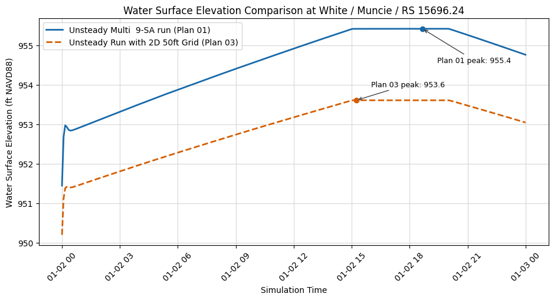
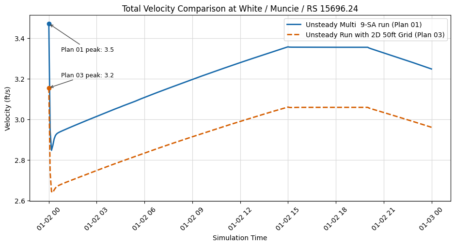
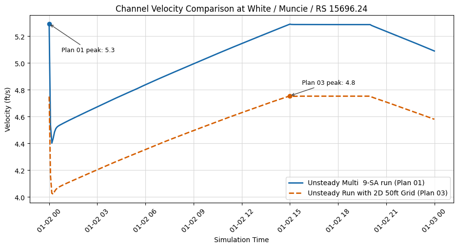
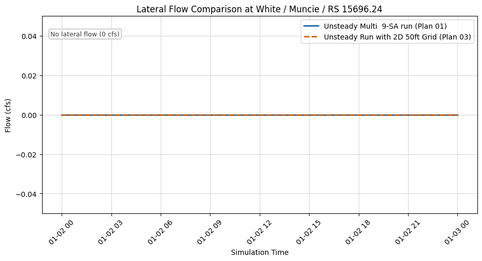
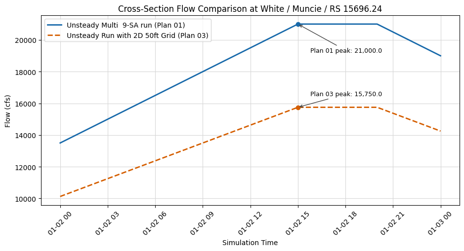
Summary of Unsteady Flow Operations¶
In this notebook, we've covered the following unsteady flow operations using RAS Commander:
- Project Initialization: We initialized a HEC-RAS project to work with
- Boundary Extraction: We extracted boundary conditions and tables from unsteady flow files
- Boundary Analysis: We inspected and understood boundary condition structures
- Flow Title Updates: We modified the title of an unsteady flow file
- Restart Settings: We configured restart file settings for continuing simulations
- Table Extraction: We extracted flow tables for analysis
- Table Modification: We modified a flow table and wrote it back to the file
- Application: We created a plan using our modified unsteady flow and computed results
Key Classes and Functions Used¶
RasUnsteady.extract_boundary_and_tables(): Extract boundary conditions and tablesRasUnsteady.print_boundaries_and_tables(): Display formatted boundary informationRasUnsteady.update_flow_title(): Modify the flow titleRasUnsteady.update_restart_settings(): Configure restart optionsRasUnsteady.extract_tables(): Extract tables from unsteady flow filesRasUnsteady.identify_tables(): Identify table locations in fileRasUnsteady.parse_fixed_width_table(): Parse fixed-width tablesRasUnsteady.write_table_to_file(): Write modified tables back to fileRasUnsteady.delete_boundary(): Remove a non-requiredBoundary Location=block with backup andboundaries_dfrefresh
Next Steps¶
To further explore unsteady flow operations with RAS Commander, consider:
- Advanced Flow Modifications: Create scripts that systematically modify flow hydrographs
- Sensitivity Analysis: Create variations of unsteady flows to assess model sensitivity
- Batch Processing: Process multiple unsteady flow files for scenario analysis
- Custom Boundary Conditions: Create unsteady flows from external data sources
- Results Analysis: Compare results from different unsteady flow scenarios
These advanced topics can be explored by building on the foundation established in this notebook.